TPR's Northeast Trip
Bowcraft & NYC Coney Island Quassy
Lake Compounce
Six Flags New England
Palace Playland
Funtown Splashtown Canobie Lake Park La Ronde Great Escape Six Flags Great Adventure
Next up on the trip was Six Flags New England. One of the bigger parks on the Northeast Trip. And it was interesting trying to drive in and not hit those cones. (Our bus just ran them over while Bryan managed to not hit any.)
Yep. We have arrived at Six Flags New England.
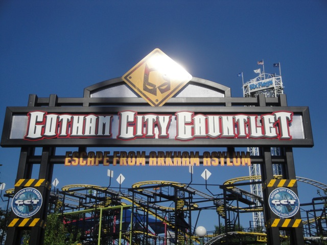
And now, we get to ride one of the most anticipated coasters on this trip. Gotham City Gauntlet!!!!
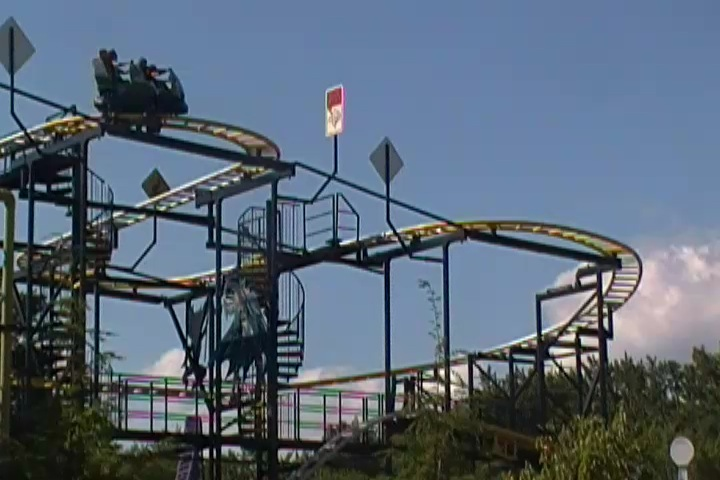
It was actually a really good Wild Mouse. In fact, I don't think it had any brakes at all. Much better ride than Dark Knight is and would've been.
 In all serious, it's Bizarro that was one of the most anticipated coasters of the trip, not Gotham City Gauntlet.
In all serious, it's Bizarro that was one of the most anticipated coasters of the trip, not Gotham City Gauntlet.
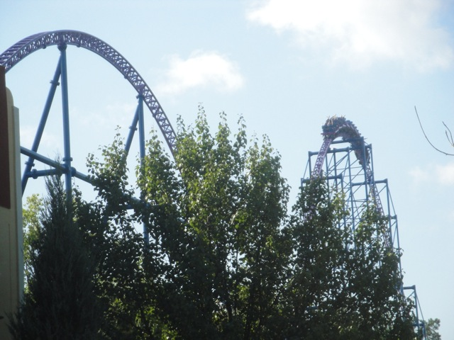
It's been ranked as one of the best coasters in the world ever since it opened as Superman: Ride of Steel.
 And yep. Bizarro kicked major ass and is definetly among one of the best coasters I've ridden.
And yep. Bizarro kicked major ass and is definetly among one of the best coasters I've ridden.
Bizarro, you've got a phone call from Cedar Point. They just want to point out a small little coaster called Maverick that is known as #1. They'd like you to take down that poster ASAP. Thanks.
"Hey!!! You're not a man!!! Get away from me!!! Or at least bring me a beer if you won't go!!!"
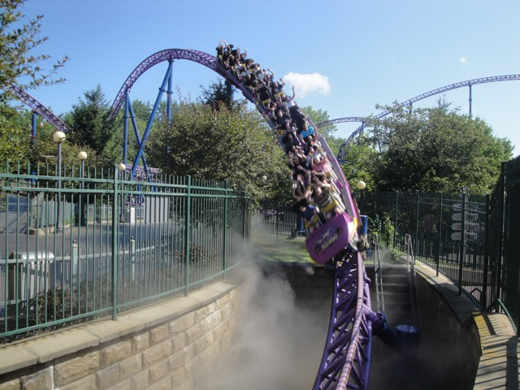
Yeah. Morning ERT on Bizzaro was awesome, and we've still got Night ERT later. =)
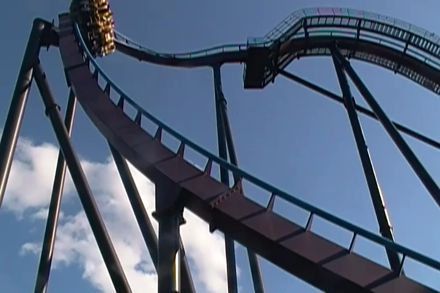
Oh yeah. We also had ERT on Batman the Dark Knight.
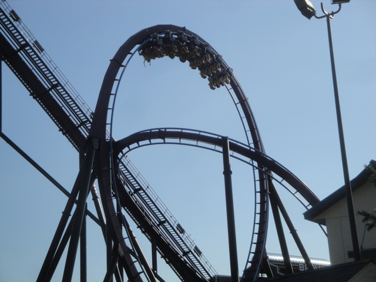
While it was fun and all, I'd definetly say it's my least favorite floorless coaster and could definetly be better. Though it's still much better than 2 other certain coasters under the name of Dark Knight.
In acts of more awesomeness, we also got Waterpark ERT!!!!
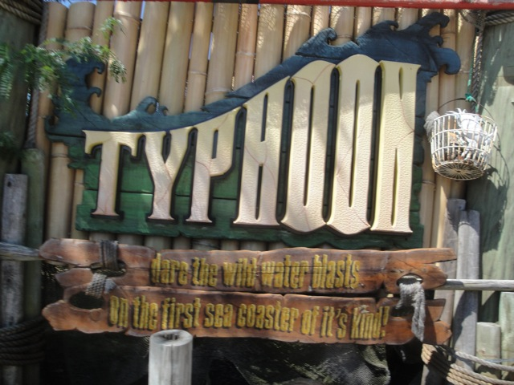
And yes, they have a water coaster here. Oh joy!!!!! =)
 While not quite as good as Wildebeest, it was a great waterslide and really felt cool going uphill.
While not quite as good as Wildebeest, it was a great waterslide and really felt cool going uphill.
 This Tornado was really good. The lack of a turn definetly made it seem faster.
This Tornado was really good. The lack of a turn definetly made it seem faster.
All right. Now that ERT is over, time to head off and get the rest of the credits at Six Flags New England. Starting off with Mind Eraser.
Hmm. Something tells me that the park president took a ride on Mind Eraser.
 Eh, it wasn't one of the better SLCs I've been on. But hey. It's still better than Kong!!! =)
Eh, it wasn't one of the better SLCs I've been on. But hey. It's still better than Kong!!! =)
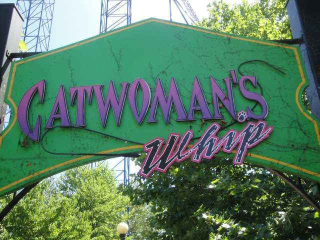
Next credit, Catwoman's Whip.
"Hey Ceaser!! Don't think I've forgotten about you!!! You owe me $500 for that special service I gave you a couple nights ago!!!"
For a kiddy coaster, it was pretty damn fun.
 All right. Next up, Thunderbolt.
All right. Next up, Thunderbolt.
 "What did your mother ever tell you about listening to giant chickens?"
"What did your mother ever tell you about listening to giant chickens?"
 The most I can say about Thunderbolt is that it's without a doubt the most average coaster I've ever ridden. It's not good. It's not bad. It's just average. It's almost like a coaster you'd see as a pre-designed coaster that comes with RCT.
The most I can say about Thunderbolt is that it's without a doubt the most average coaster I've ever ridden. It's not good. It's not bad. It's just average. It's almost like a coaster you'd see as a pre-designed coaster that comes with RCT.
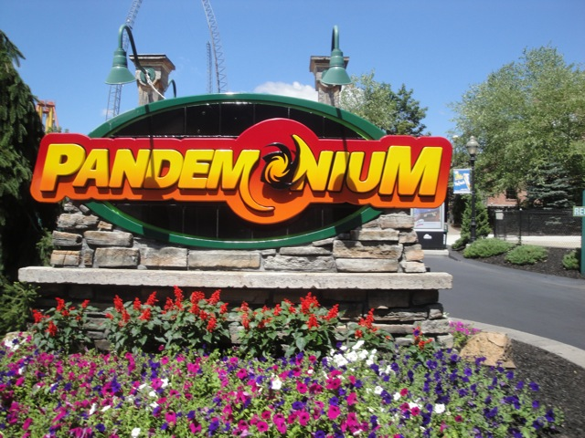
All right. Next up was Pandemonium. The parks Gerslauter Spinner.
Dude!!! This thing kicked ass!!!! It spun like crazy, and it actually had good moments of airtime!!! I'm not sure what makes this so much better than all the other Gerstlauter Spinners, but it is!!!
 That's enough credit whoring for now. Time to head over to the pavilion for lunch.
That's enough credit whoring for now. Time to head over to the pavilion for lunch.
I'd just like to remind you that we are in a Six Flags park.
Again, this doesn't even feel like a Six Flags park.
We have our name on the sign because we're special.
Dude!!! This park serves Vault!!! This park just got much better!!!! =)
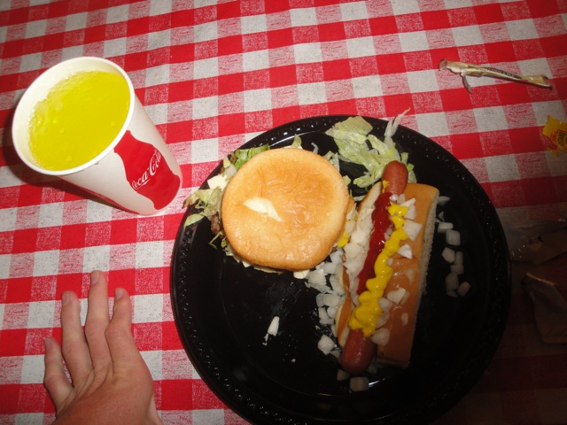
Yeah. We got a good lunch at Six Flags New England...
As well as a cool presentation from the park!!
Up next was the craziness known as TPR Quest.
"Take back your bra mam!!! You've obviously underestimated the size of my manboobs!!!"
 "You see that manboob contest right there? They didn't let me enter it since if I did, I'd win by default!!! That's how big my manboobs are!!!"
"You see that manboob contest right there? They didn't let me enter it since if I did, I'd win by default!!! That's how big my manboobs are!!!"
"May I ask what's going on here?"
 Skycoastin Steve: "YEAH!!!!! I BEAT YOU GUYS!!!! YOU GUYS ARE PATHETIC!!!! MY GRANDMOTHER CHUGS BEER FASTER THAN ALL YOU GUYS PUT TOGETHER!!!!"
Skycoastin Steve: "YEAH!!!!! I BEAT YOU GUYS!!!! YOU GUYS ARE PATHETIC!!!! MY GRANDMOTHER CHUGS BEER FASTER THAN ALL YOU GUYS PUT TOGETHER!!!!"
 And now back to our day of riding roller coasters at Six Flags New England.
And now back to our day of riding roller coasters at Six Flags New England.
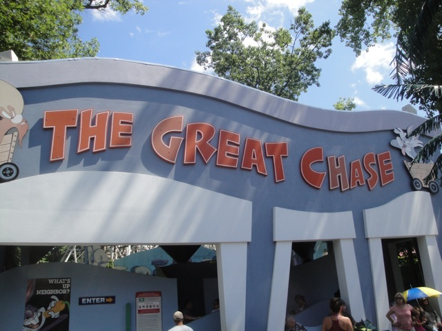
"Oh boy. Time for some serious credit whoring."
 Look up sad and pathetic in the dictonary and you'll see us riding this coaster.
Look up sad and pathetic in the dictonary and you'll see us riding this coaster.
"Dammit Kevin!!!! You've turned me into a credit whore!!!!"
 Up next was Cyclone, which was a very interesting wooden coaster.
Up next was Cyclone, which was a very interesting wooden coaster.
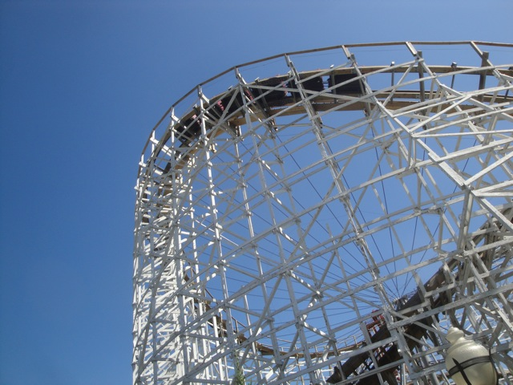
It goes from being rough to being smooth as glass as well as from having some really good pops of ejector air, to being forceless and boring. It's just a bizarre bizarre ride.
 Don't underestimate the oddness of this ride. It's truely strange.
Don't underestimate the oddness of this ride. It's truely strange.
 And finally, we have Flashback. The parks boomerang.
And finally, we have Flashback. The parks boomerang.
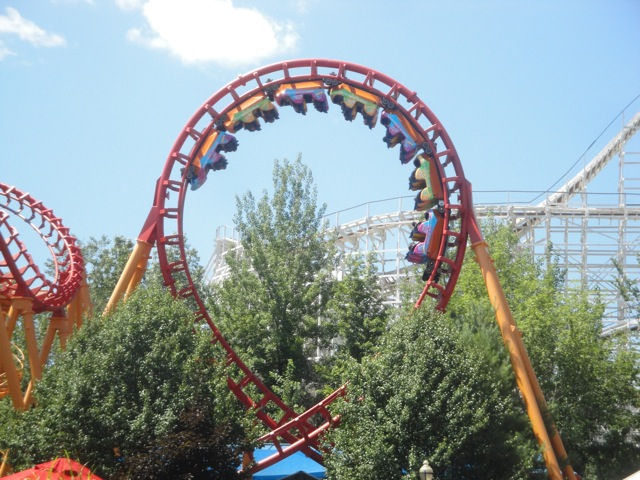
Six Flags New England loves this ride. In fact, they love it so much that they're getting basically the same ride again!!!!
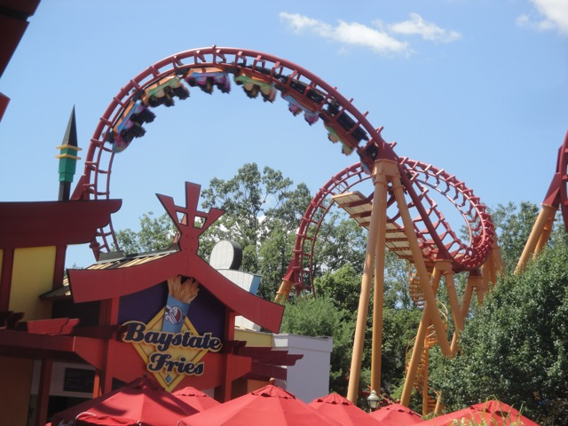
Why do I feel that we'll be seeing another SLC being the park's new 2013 attraction?
We tried to get on Catapult, but after waiting for several minutes for the ride to start, we were told the ride broke down. Guess I jinxed the ride. Again.
Smallest Skycoaster Ever!!!!
Nice. It's Tarzan Taz.
"I'm too lazy to buy a cheap basketball and head over to the court and shoot a couple hoops, but I'm willing to pay the same price as a new ball to shoot a couple baskets in a theme park across the country. Wait, somehow that doesn't make sense."
"I may be smiling in this photo, but I HATE THIS F*CKING BALL!!!! I DON'T CARE THAT I'M GIVING IT THUMBS UP IN THE PHOTO!!!!! I HATE THIS BALL SO F*CKING MUCH!!!!!! I REALLY WANTED TO GET A CELTICS BASKETBALL!!!!! BUT THE STUPID EMPLOYEES WOULDN'T LET ME EXCHANGE!!!! SO NOW I'M STUCK WITH THIS PEICE OF SH*T COASTER HERO BALL!!!!! I HATE THIS BALL!!!!! I HATE IT SO F*CKING MUCH!!!!!!!!!!!!!!"
 Later that evening, we got a really awesome Bizarro Backstage Tour!!! =)
Later that evening, we got a really awesome Bizarro Backstage Tour!!! =)
 This ride has all sorts of airtime. It's got floater airtime, ejector airtime, and everything in between.
This ride has all sorts of airtime. It's got floater airtime, ejector airtime, and everything in between.
 This is what I like to call the "It Happens" Hill. Because no matter where you're sitting or what you're doing, it happens. You just get ejected here. It just happens.
This is what I like to call the "It Happens" Hill. Because no matter where you're sitting or what you're doing, it happens. You just get ejected here. It just happens.
 Here starts the actual backstage tour as from here on out, these are shots you can't get unless on a backstage tour. Like this awesome awesome shot.
Here starts the actual backstage tour as from here on out, these are shots you can't get unless on a backstage tour. Like this awesome awesome shot.
 Why do all the trains on coasters we try to photograph flee from us?
Why do all the trains on coasters we try to photograph flee from us?
 Backstage Bizarro Goodness.
Backstage Bizarro Goodness.
 "PUT ME ON YOUR WEBSITE!!!!! PUT ME ON YOUR WEBSITE!!!!!"
"PUT ME ON YOUR WEBSITE!!!!! PUT ME ON YOUR WEBSITE!!!!!"
 Once again, thank you Six Flags New England for all these awesome shots.
Once again, thank you Six Flags New England for all these awesome shots.
This was a good S&S Tower. Unfortunetly, they turned the Combo Mode off when I was on. But it was still fun.
 And now, I'd like to tell you about one of the most underrated rides ever. The Great Houdini.
And now, I'd like to tell you about one of the most underrated rides ever. The Great Houdini.
This ride is crazy!!! Apparently, it's just a spinning room, but it literally feels like you're flipping!!! It literally does!!! Unlike on most rides where once you learn how the effects work, they lose their effectiveness, it doesn't happen here. Even when you know how it works, you still can't understand how the ride works!!! It's like the boulder effect on Indiana Jones. I know that the room is actually moving forewords. But I've NEVER felt it before. It still feels like it's moving backwards EVERY SINGLE TIME!!!!! Same thing here.
Oh, and I got on Catapult. And I liked it. Sure the restraints may be from the devil herself, but the ride itself is fun.
Speaking of underrated, let's talk about these magic carpet rides. THEY'RE AWESOME!!! Why don't more parks get rides like this? They're awesome!!!
Unlike this wipeout. This has got to be the lamest Wipeout ever. Sure, it's got a cool theme, but DAMM is it forceless!!!!!
 All right!! Time for our night Bizarro ERT!!!! And while Bizzaro kicks ass in the morning, it kicks MAJOR ASS at night!!!! I love this ride and am proud to call it my 2nd Favorite Steel Coaster.
All right!! Time for our night Bizarro ERT!!!! And while Bizzaro kicks ass in the morning, it kicks MAJOR ASS at night!!!! I love this ride and am proud to call it my 2nd Favorite Steel Coaster.
 However, something very intersting happened during our ERT. While we were in line for Bizarro during ERT, this woman, now known as the Bizzaro Bash Bitch stormed in front of us with her children and stated "OUT OF MY WAY!!!! I HAVE A Q BOT HERE!!!!!!!!" Then Antonio, being Antonio, confronted the woman and stated "Excuse me!!! This is a private event!!! You have to leave!!!!" She then said something trashy and bitchy to him. She ended up getting on and stuck her tounge out at us. However, we later realized that you need to turn your Q Bot in when the park closes, and if you don't you get charged $250 on your credit card, and to get a Q Bot, you have to give them your drivers liscence to get the Q bot. So when you don't turn your Q bot in, they keep your drivers liscence locked up overnight, leaving you unable to drive home. Knowing this, we began to laugh our asses off. So then we informed security that she snuck into the event, and confronted her again. Antonio and Jason informed of this, and though you could tell she was horrified since she had that "Oh Sh*t!!!" look on her face, she just held kept bitching and said "I DO TOO HAVE MY DRIVERS LISCENSE!!!!" Antonio then continued to yell at her, and you could tell she was getting pissed off (that's when this photo was taken), and by this time, everyone at Bizarro Bash knew what was going on. Then they had to announce over the loudspeakers "Ladies and gentelmen, this is a private event. You may not be here if you are not part of this event. Don't act like you can't hear us!!! We know you're there!!! You need to leave immedietly!!!" Later we saw her get escorted out of the park by security, which was absolutely hilarious. I just wonder what they had to put up with during that walk from Bizarro to the parking lot.
However, something very intersting happened during our ERT. While we were in line for Bizarro during ERT, this woman, now known as the Bizzaro Bash Bitch stormed in front of us with her children and stated "OUT OF MY WAY!!!! I HAVE A Q BOT HERE!!!!!!!!" Then Antonio, being Antonio, confronted the woman and stated "Excuse me!!! This is a private event!!! You have to leave!!!!" She then said something trashy and bitchy to him. She ended up getting on and stuck her tounge out at us. However, we later realized that you need to turn your Q Bot in when the park closes, and if you don't you get charged $250 on your credit card, and to get a Q Bot, you have to give them your drivers liscence to get the Q bot. So when you don't turn your Q bot in, they keep your drivers liscence locked up overnight, leaving you unable to drive home. Knowing this, we began to laugh our asses off. So then we informed security that she snuck into the event, and confronted her again. Antonio and Jason informed of this, and though you could tell she was horrified since she had that "Oh Sh*t!!!" look on her face, she just held kept bitching and said "I DO TOO HAVE MY DRIVERS LISCENSE!!!!" Antonio then continued to yell at her, and you could tell she was getting pissed off (that's when this photo was taken), and by this time, everyone at Bizarro Bash knew what was going on. Then they had to announce over the loudspeakers "Ladies and gentelmen, this is a private event. You may not be here if you are not part of this event. Don't act like you can't hear us!!! We know you're there!!! You need to leave immedietly!!!" Later we saw her get escorted out of the park by security, which was absolutely hilarious. I just wonder what they had to put up with during that walk from Bizarro to the parking lot.
Oh, and they also had the Gotham City Gauntlet Water Challenge, which like the Tony Hawk Challenge, was impossible to have any water kept inside.
 Thank you for the great event Six Flags New England!!! You guys are awesome!!!!
Thank you for the great event Six Flags New England!!! You guys are awesome!!!!
Palace Playland
Home